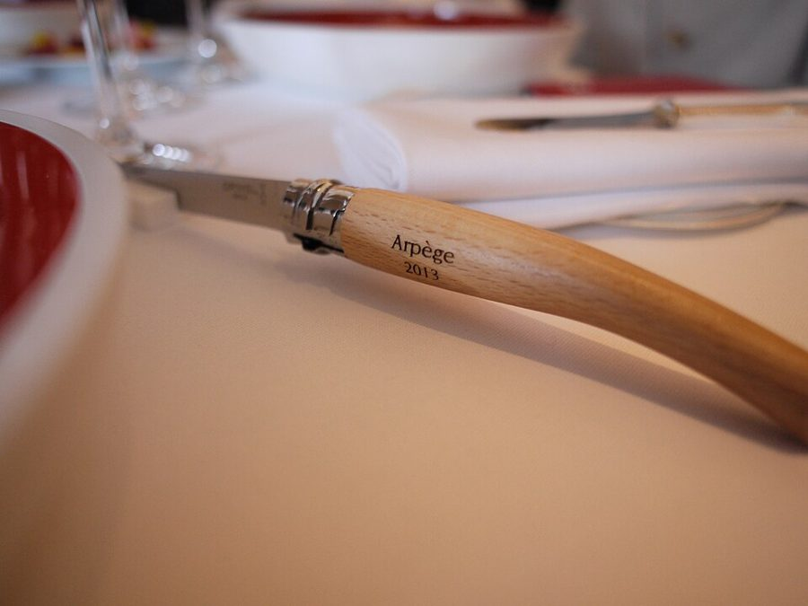
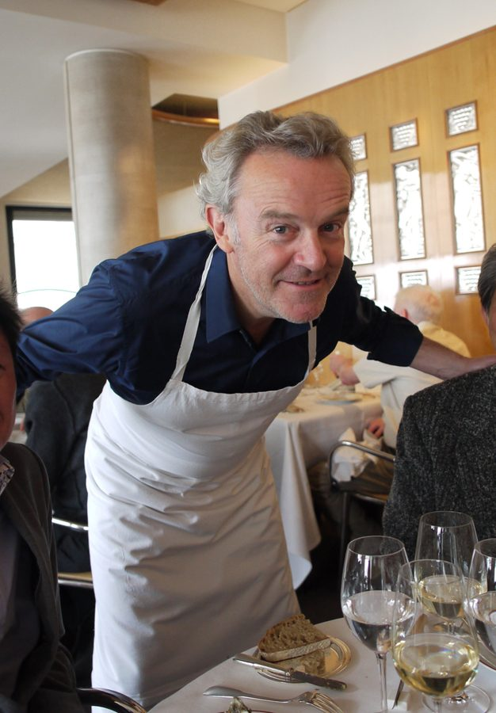
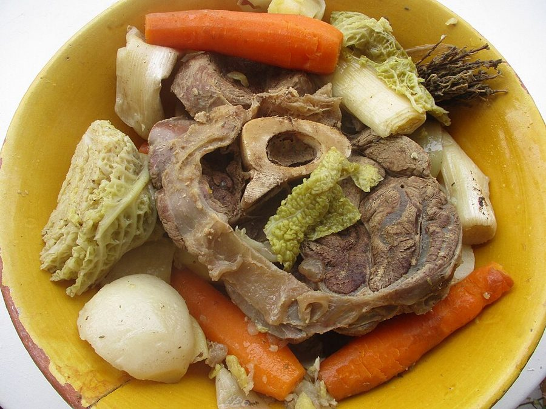
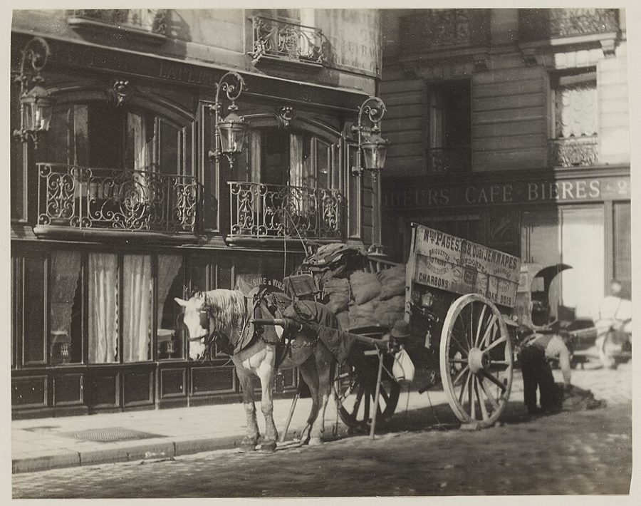
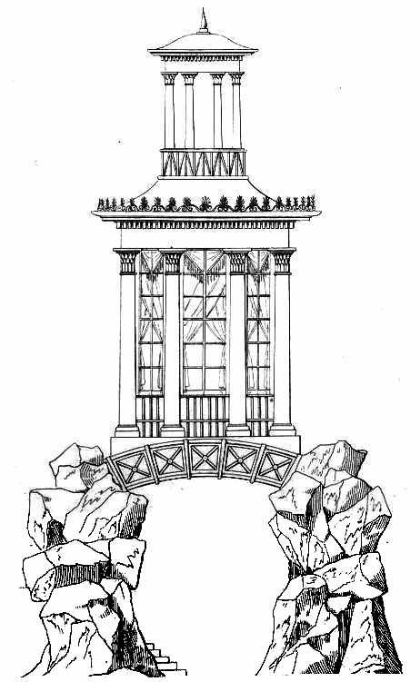
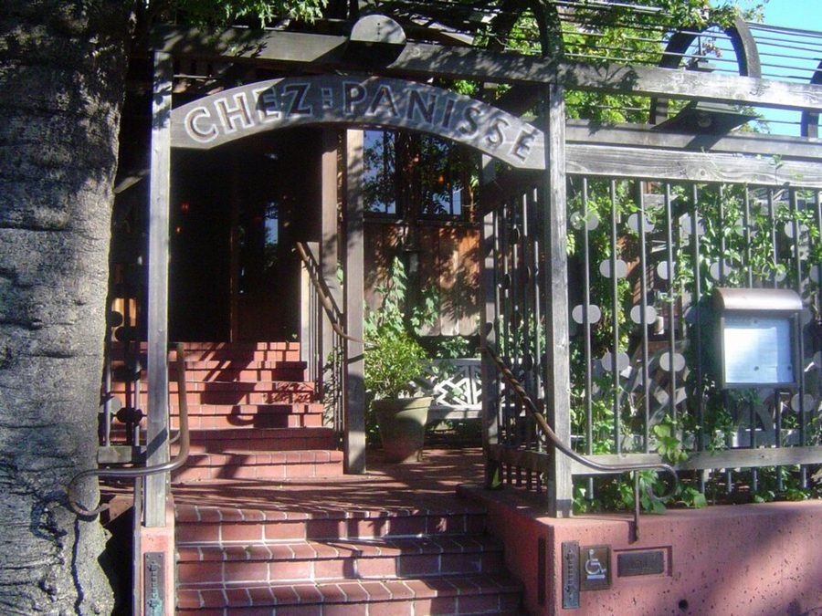
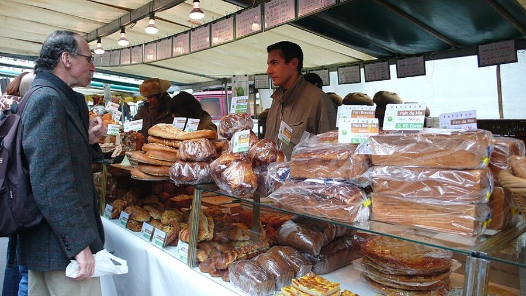
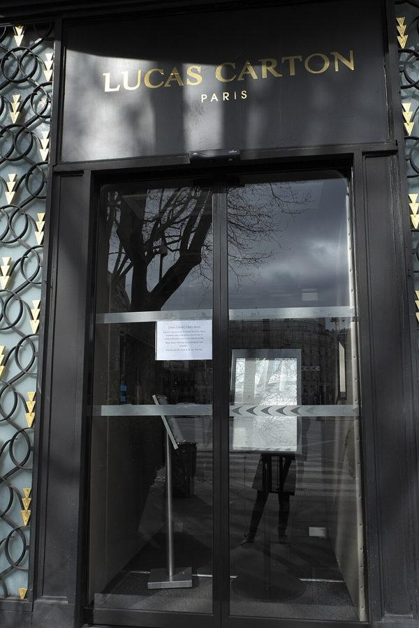

这一篇在做什么
1990 年代后半，法国人自己开始担心法国菜：顶级餐厅贵得吓人，普通人连家常菜怎么做都说不清，伦敦的厨师说巴黎的菜又重又懒。作者从巴黎名店 Arpège 厨房里一个十八岁帮厨焖番茄的早晨写起，往「法国菜为什么停在原地」这个大题目走。抓两条线：一条是作者自己的胃，从十四岁在巴黎吃的第一顿饭，到最后回那家店重吃一次；一条是一串诊断，历史的、技术的、教育的，一节换一个病因。

Arpège 餐桌上的刀，刀柄上印着店名和年份，2013 年。这一篇从这家店的厨房开始，也在这里结束。NIeFH from Taipei, Taiwan，CC BY-SA 2.0，维基共享资源 读之前：这篇的来历
这一篇 1997 年先在《纽约客》刊出，原题是个问句：法国菜有危机吗？（Is There a Crisis in French Cooking?）作者一家 1995 年秋天搬到巴黎，这一篇几乎不写家事，写的是作者花了几个月「做研究」，也就是到处吃饭、进厨房、找厨师聊天。它在书里属于第三部分「从物件学到的」：前一篇写高级时装的「危机」，后一篇写儿子和美国儿童节目，这一部分都是拿一样东西来看法国。第 1 篇导言里一笔带过的两件事，十四岁那年在巴黎吃的第一顿饭和作者的老朋友 Eugenio Donato，在这一篇都展开了。
法国菜真的不行了吗？如果说是「停住了」，停在哪里，为什么偏偏是发明了这一切的法国？
读的时候带着这几个问题。不用先找答案，读完回来对照「检查一下理解」。
作者把「危机」分成高、中、低三层。法国人自己担心的是哪几层？作者在意的又是哪一层？§2
Donato 说「法国菜」是上层的人发明出来的。作者有多相信他？哪些地方是作者借他的话说自己的看法？§4 §5
作者拿美国来对照时，是一路在夸美国吗？留意 §7 末尾他把谁说成了「天真的人」。§5 §7
这一篇的路线
全篇八节，像一次会诊：开头和结尾是两个现场，Arpège 的厨房和作者十四岁吃第一顿饭的小馆；中间是一串诊断，差不多一节换一个病因，最后从厨房拉到美国和欧洲的关系上。§3、§4 先讲法国菜的老家谱，再讲 Donato 的理论，读译本时容易以为换了话题，其实是在给后面的诊断搭底。§8 回到番茄和老店，两条现场线一起收尾。
厨房现场
作者回忆
诊断
§1
§2
§3
§4
§5
§6
§7
§8
番茄与面包
第一顿饭
中段危机
老家谱
Donato
新派菜
土与香料
烤架与学历
医生的书
权力换位
番茄出锅
重访老店
本站示意图。橙点是厨房现场，绿点是作者的回忆，蓝点是诊断和历史，折线是阅读顺序，虚线是原书的分隔。§7 那个橙点是作者和一位医生在 Arpège 吃午饭。 作者落在哪： 作者的诊断是：法国一再给别处的革命打地基；新派菜在法国只是一场「改良」，又被守护本土的情绪收了回去，顶级菜成了要人供养的大歌剧。可他不把话说死：回到十四岁时那家小馆，菜比记忆中还好，他给了三种解释，只肯说「还有希望」。
分节地图
原书这一篇有七处分隔，分成八节。全篇七千多词，分三次坐下读。每一节的粗体是读译本时认得出的场面；下面的斜体是英文这一节开头的几个词，打开电子书搜它就能跳到那里。读完一节打个勾。
第一次坐下§1–§3 · 约 2900 词 · 一个厨房、一顿回忆、一份老家谱
Arpège 地下室里焖番茄、烤面包约 1100 词 Nine o’clock on a Friday morning … 一个厨房的上午，先不讲道理。留意两个帮厨各代表什么，和结尾那声「真的可以？」 十四岁的第一顿饭，民调和伦敦人的嘲笑约 1400 词 Most people who love Paris love … 「危机」在哪一层；节末作者给出自己的第一个诊断。 美第奇、Carême、Escoffier 和锅底酱约 400 词 The early seventies, when I was … 法国菜的「标准家谱」，作者先摆出来，下一节让 Donato 推翻。 第二次坐下§4–§5 · 约 2400 词 · Donato 的理论，新派菜为什么在法国卡住
和 Donato 吃里昂馆子，新派菜的兴起与停滞约 1600 词 I heard another, more weirdly philosophical … 最长的一节：先讲理论，再讲新派菜怎么起来又怎么卡住。「土与香料」后面要用。 Chez Panisse、咖喱粉和麦当劳约 800 词 Thinking it over, I suspect that … 拿美国对照：同样的新派菜，为什么在美国走得更远。 第三次坐下§6–§8 · 约 2100 词 · 更实际的病因、更深的病因，然后回到番茄和老店
没有烤架；美国厨师 Alex 在 Guy Savoy 当学徒约 900 词 Waverley Root once divided all Gaul … 两个实际的原因：工具和学历。留意作者怎么替美国侍者说好话。 呼吸科医生写的一千一百页烹饪书约 1000 词 Beyond these reasons—the missing grill, … 「更深的原因」：从一本书拉到美欧之间谁更在乎吃什么。 番茄出锅，重访十四岁时的小馆约 300 词 When the tomate confite, which David … 两条现场线一起收尾；结论故意留了三个选项。
背景：作者默认你知道的事
按在书里出现的顺序排，标题前是节号。
§1 Arpège、Passard 和厨房里的等级Arpège 在巴黎第七区的瓦雷纳街（rue de Varenne）。1986 年，厨师 Alain Passard 从老师 Senderens 手里接下这个店面，改名 Arpège，1996 年拿到米其林三星；§4 说这里原来是 Senderens 的 Archestrate，指的就是这件事。米其林红色指南是法国最有分量的餐馆指南，最高三星。厨房里由上往下：主厨（chef）、副主厨（sous-chef，书里的 Pascal Barbot）、各岗位的厨师、最底层的帮厨（commis），洗锅洗碗的叫 plongeur。

Alain Passard，2013 年。这一篇写的时候他刚拿到第三颗星不久。nienfanhsun，CC BY-SA 2.0，维基共享资源 §2 法国菜的「金字塔」和几道家常菜作者说的金字塔：底下是全民都会做的家常菜，顶上是高级餐厅的大菜（grande cuisine），两头一脉相承。民调里提到的几道：pot-au-feu，牛肉和蔬菜一锅慢炖；blanquette de veau，白汁炖小牛肉；gigot d’agneau，烤羊腿；steak-frites，牛排配薯条，小馆里最普通的一道。Lucas Carton 在玛德莱娜广场（place de la Madeleine），是巴黎最老牌的高级餐厅之一，§4 还要去那里吃一顿。

一碗 pot-au-feu，2019 年。§3 说老派的说法是：法国菜的根就在这口农家的汤锅里。Arnaud 25，CC BY-SA 4.0，维基共享资源 §2 十四岁那顿饭，第 1 篇讲过第 1 篇导言写过同一件事：1973 年，作者十几岁，全家坐一辆雪铁龙旅行车来到巴黎，晚上花十五法郎吃到了这辈子最好的一顿，主菜是鳟鱼；来巴黎之前在伦敦待过几天。两篇的细节略有出入（伦敦待了两天还是三天，一桌八个人还是九个人），不必较真。小馆在第十六区，那是巴黎西边的高级住宅区，作者特意说是它「不时髦的边上」。§8 他回去找到了这家店。
§2 还开着的老馆子Balzar 在拉丁区的学院街（rue des Écoles），Lipp 在圣日耳曼大道，都是老牌啤酒馆（brasserie）；第 17 篇整篇写 Balzar。Lapérouse 在左岸的大奥古斯丁码头，有一间间私人包厢。Olivier Todd 写的加缪传记 1996 年出版。书里列的 Le Petit St. Benoît，第 1 篇也出现过，是作者一家趁 Luke 睡觉去吃午饭的店之一。Liebling 是《纽约客》的老作者，写过一本在巴黎吃饭的回忆录 Between Meals（1962）。

约 1890 年，一辆运煤的马车停在 Lapérouse 门前。作者说，巴黎的老馆子可以「冬眠」多年再醒过来，这家就是例子。Hippolyte Blancard，CC0，维基共享资源 §3 从 Carême 到 Escoffier「美第奇家的凯瑟琳嫁到法国，带来了意大利厨师」是流传很广的说法，不少饮食史家认为证据不足。Carême（1784–1833）被书里称作欧洲史上第一位大厨，做的大型甜点装饰照着建筑画来设计，还写了好几本书。Escoffier（1846–1935）和酒店业者 César Ritz 合作，先后主持伦敦的 Savoy 和巴黎的 Ritz 的厨房；他编的《烹饪指南》（Le Guide culinaire，1903）把各种母酱和做法定成了规矩。

Carême 书里的一幅设计图，题为「雅典式亭子」。书里说他的菜像建筑，就是这个意思。Antonin Carême，公有领域，维基共享资源 §4 Eugenio Donato 和「解构」Donato 是真人，作者父亲的朋友。第 1 篇说过，他带十几岁的作者去听过罗兰·巴特（Roland Barthes）的研讨课。1966 年约翰·霍普金斯大学有一场研讨会，把法国的结构主义和德里达介绍给了美国学界，Donato 是组织者之一，会议文集 The Structuralist Controversy 由他和 Richard Macksey 合编。「解构」的路数，是指出一样看起来天然如此的东西其实是被造出来的；Donato 讲法国菜，用的就是这一套。
Akim Tamiroff Akim Tamiroff 亚美尼亚裔好莱坞演员，口音浓得出名。作者用他形容 Donato 的五种语言。
John Madden John Madden 美国橄榄球教练，后来是家喻户晓的电视解说员，身材魁梧。作者说 Donato 长得像他。
§4 1855 年的分级和「新派菜」1855 年巴黎办世界博览会，波尔多的酒商按价格把梅多克（Médoc）一带的红酒排成五个等级（cru），名单至今几乎没变。Donato 的意思是：城里人定的秩序，被说成土地本来的秩序。新派菜（nouvelle cuisine）这个名号是 1970 年代初美食评论家 Gault 和 Millau 叫响的，主张食材新鲜、做法简单、分量轻。书里点名的 Bocuse、Guérard、Senderens 都是那一代的代表。
§5 Chez Panisse、有机市集和古斯米Alice Waters 1971 年在加州伯克利开了 Chez Panisse，坚持用附近农场的时令食材，带出了一代美国厨师。M. F. K. Fisher（1908–1992）是美国最有名的饮食作家之一，写过很多在法国吃喝的文字。拉斯帕伊大道（boulevard Raspail）的有机市集每个星期天上午开。古斯米（couscous）是北非的粗麦粉主食，随北非移民进了法国。

伯克利的 Chez Panisse 门口，2003 年。书里说烹饪的缪斯「搬到了伯克利的一个地方」，多半指的就是这里。Calton，CC BY-SA 3.0，维基共享资源 
拉斯帕伊市集上的面包摊，2008 年 3 月的一个星期天上午。yisris from Morioka, Japan，CC BY 2.0，维基共享资源
Peter Hoffman Peter Hoffman 纽约餐馆 Savoy 的老板兼主厨。§5 讲他在三星餐厅 L’Ambroisie 吃到一道「撒了咖喱粉」的菜。
Madhur Jaffrey Madhur Jaffrey 印度裔演员和饮食作家，写书把印度家常菜介绍给英美读者。Hoffman 拿她来说：咖喱是一套做法，不是一种粉。
§6 烤架、Waverley Root 和 Guy SavoyWaverley Root 是美国记者，1958 年出版《法国的食物》（The Food of France），按做菜用哪种油脂给法国分区。法国菜的老办法是在锅里煎，再用酒或高汤把锅底的焦香化开做酱（deglaze）；美国人家常的是后院烤架，烤完锅里什么都不剩，只好另配酸辣酱、果味芥末。Guy Savoy 是巴黎名厨，书里说他当时的店在第十七区、米其林二星。CIA 在这里是美国烹饪学院（Culinary Institute of America）。
§7 亨利·詹姆斯的单子和《漂亮朋友》亨利·詹姆斯（Henry James）1879 年写霍桑的传记，列了一长串美国「没有」的东西：君主、宫廷、贵族、古堡、大教堂……用来说美国作家缺什么。Whistler 是长住伦敦和巴黎的美国画家。莫泊桑的《漂亮朋友》（Bel-Ami，1885）开头，穷小子 Duroy 掂量兜里的钱吃晚饭，接着去朋友家赴宴，在饭桌上学会怎么往上爬。Spago 是洛杉矶的明星餐馆，Four Seasons 是纽约权贵吃「权力午餐」的地方。
Jean-Philippe Derenne Jean-Philippe Derenne 按书里的介绍：巴黎一家医院的呼吸科主任，业余写了一千一百页的《烹饪爱好者》（L’Amateur de Cuisine）。
Mircea Eliade Mircea Eliade 罗马尼亚裔宗教史学家。Derenne 说自己照他整理宗教的办法整理了烹饪。
Duke Ellington Duke Ellington 美国爵士乐作曲家、乐队领队。Derenne 拿他比「有什么用什么」的本事。
词与短语
只收中文译文多半传不出原味的地方：熟词生义、反话和挖苦、典故、夹在英文里的法文。读译本读到觉得别扭、不知道作者在说什么时，来这里找那一节的；斜体小字是原句里的几个英文词，在电子书里搜它就能找到原文。
§1 Arpège 地下室里焖番茄、烤面包
commis
… David Angelot, the commis at the restaurant …
（法文）帮厨
厨房里最低一级的厨工。作者在同一段里自己换了个说法 kitchen cabin boy（船上打杂的小厮），意思是什么杂活都归他。
it eats like a sweet
… it eats like a sweet
吃起来是甜点
eat 在这里是不及物动词，主语是菜：「吃起来像……」。前半句 it sounds like a veggie 对着说：听着是蔬菜，吃着是甜食。
farce
… and makes a farce, a stuffing …
（法文）馅
英文的 farce 是闹剧，这里是法文的「馅料」，作者紧接着用 stuffing 解释了。读成「闹剧」整句就乱了。
to underline the point
… into its body, to underline the point
好把这个道理讲透
玩笑：「番茄是水果」本来是一个论点，要往它身上打进一大锅焦糖才算「强调」到位。underline 本义是在字下画线。
pushed around
… then mostly pushed around absentmindedly on …
在盘子里拨来拨去
push food around 是吃饭心不在焉、拿着叉子拨弄不吃。精心手做的面包多半落得这个下场，所以 Guilhem 有点苦闷。
several glazes darker
… is always several glazes darker than American
深好几个色度
glaze 是画家一层层罩的透明釉色。作者用油画的说法形容法国禽肉的颜色比美国的深。
plongeurs
… one of the Malinese plongeurs
（法文）洗碗工
字面是「潜水的人」，手整天泡在水里。奥威尔写过自己在巴黎餐馆当 plongeur 的日子。书里说这几位来自马里。
converts to Passardism
They are all converts to Passardism.
都成了 Passard 的信徒
convert 是改了宗教信仰的人，Passardism 是拿厨师的名字造的「主义」。把一种做菜的路数说成一门教派，半是佩服半是打趣。
joints
… cooks his birds and joints sur …
大块的肉
joint 在英式烹饪里是带骨的大块肉（如一整条羊腿），不是「关节」。同一段前面的 joints 却是口语的「馆子」，两个意思挨得很近。
sur la plaque
… birds and joints sur la plaque
（法文）直接在灶上
plaque 是灶台的铁板。作者马上解释：不进烤箱，在灶上用极小的火慢慢焖。
sweating
He’s just sweating those babies,
（用小火）逼出汁水
sweat 是烹饪术语：小火加热，让食材出水出油而不上色。babies 是厨师对那几块肉的昵称。这位美国帮厨的话很粗，口气是由衷佩服。
have a life
… where you can cook and have a life
还能有自己的生活
have a life 是口语「工作之外还有日子可过」。法国厨房每天干十几个小时，所以 Guilhem 听了一愣，连问两遍「真的可以？」。
§2 十四岁的第一顿饭，民调和伦敦人的嘲笑
the grand tour
… academic version of the grand tour
（欧洲）大游学
18 世纪英国贵族子弟毕业后游历欧洲的惯例。作者一家是教授家庭，钱不多，所以说是「打折的美国学者版」。
snubbing the fish
… seemed to be snubbing the fish …
对鱼爱理不理
炸鱼的面糊和鱼肉分家，作者说它们像两个没经人正式介绍过的英国人，互不搭理。一句话挖苦了英国菜，也挖苦了英国人的礼数。
compelled at gunpoint
… I am compelled at gunpoint to add,
被人拿枪逼着补一句
玩笑：说法国菜好，得赶紧声明母亲也做得一样好，免得家里人不高兴。后半句又认真起来：母亲的菜是日子本身，不是一次尝鲜。
inevitably
… has been, inevitably, to create a National …
不出所料
反话。法国人遇到问题的办法是成立一个委员会，还挂在文化部下面。inevitably 是在笑这种习惯。
Matilda Qui Danse
or Matilda Qui Danse, in Adelaide
（编的店名）跳舞的 Matilda
把澳大利亚民歌 Waltzing Matilda 译成法文当店名。这一串多半是作者编的：克利夫兰、利兹、阿德莱德这些地方开的「法国」馆子，如今未必比巴黎差。
of all places
… and, of all places, Great Britain.
偏偏是
of all places 表示「最想不到的地方」。英国菜在美国人和法国人眼里一向是笑话，缪斯居然也去了那里。
Doubts keep creeping in
… but Doubts keep creeping in
疑心一点点爬上来
大写的 Doubts 是维多利亚时代信徒对信仰的「怀疑」。Robert Ingersoll 是 19 世纪美国有名的不可知论演说家。作者把对巴黎菜的动摇，比成老派牧师读了怀疑上帝的书。
blessed himself
… who once blessed himself at every dinner …
暗自庆幸
bless oneself 字面是在胸前画十字。接着上一句的宗教比喻：当年每顿饭都要感谢上帝，让自己逃出了纽约那种连锁餐馆。
plays Gallant to
… place that plays Gallant to the more …
当乖孩子
Goofus 和 Gallant 是美国儿童杂志 Highlights 上的连环画：Goofus 什么都做错，Gallant 什么都做对。作者说 Balzar 是乖孩子，名气更大的 Lipp 是坏孩子。
commonplace civilization
… the richest commonplace civilization that has …
日常生活的文明
commonplace 不是「平庸」，是「日常的、人人有份的」。第 1 篇导言也用过这个说法，说的正是作者爱巴黎的那些东西：咖啡馆、小馆、公园，日常的东西本身就是文明。
tie-staining research
… painstaking, tie-staining research, I think …
吃得领带上全是油渍的研究
自嘲：所谓研究就是一顿接一顿地吃。painstaking（煞费苦心）和 tie-staining 读音相近，一本正经里藏着玩笑。
§3 美第奇、Carême、Escoffier 和锅底酱
Indian summer
… a kind of Indian summer of …
深秋回暖的好时光
秋天冷过之后又暖起来的一段日子，比喻一件事结束前最后的好光景。和「印度」无关。下一句的 last exhalation（最后一口气）是同一个意思。
went public
… the style of French cooking went public.
走进了公众
go public 平常是「上市」或「公开」。这里是说大革命后贵族家的厨师流落街头，法国菜从深宅大院走进了人人能去的饭馆。
Take something; do something to it
Take something; do something to it;
拿一样东西，对它做点什么
美国画家 Jasper Johns 在速写本里写过这样一段创作笔记，Johns 常被归入「新达达」。作者借来概括 Escoffier 的菜：一层层加工。原文写成 Jasper John’s，是笔误。
the creature of courtiers
Escoffier was largely the creature of courtiers
宫廷中人一手捧出来的人
creature 在这里不是「生物」，是靠某人提携、为某人效力的人。意思是 Escoffier 的菜是给上流社会做的。
an article of faith
It was also an article of faith,
人人深信不疑的信条
原指宗教信条。作者用它，暗示这个说法没人去查证，§4 Donato 就要推翻它。
père
… Alexandre Dumas père’s famous Grand Dictionnaire …
（法文）大仲马
père 是「父亲」，用来和同名的儿子小仲马（fils）区分。写《三个火枪手》的大仲马晚年编过一部烹饪大辞典。
gone to town
… French provincial cooking gone to town.
进了城、还放开了手脚
双关：字面是乡下菜搬进城；go to town 又是习语「大干一场、铺张起来」。古典法国菜就是乡下菜进城以后铺张开来的样子，这是老派的说法。
§4 和 Donato 吃里昂馆子，新派菜的兴起与停滞
the Johnny Appleseed or Typhoid Mary
… the Johnny Appleseed or Typhoid Mary of deconstruction
解构主义的播种人，或者传染源
Johnny Appleseed 是美国民间传说里一路撒苹果种子的人；Typhoid Mary 是 20 世纪初纽约一位带伤寒菌的厨娘，传染了很多人。同一个四处讲学的人，看你喜不喜欢解构主义，是播种还是传病。
colonize the past
… and, retrospectively, colonize the past.
回头占领过去
上层发明的观念往下渗，还倒过来改写历史，让人以为它自古就有。colonize 是学院派的说法，像殖民者占地一样占领「过去」。
essentialized
call an “essentialized” idea of France
本质化的
学院行话：把复杂多变的东西当成有一个永恒不变的「本质」。作者加上 every assistant professor（每个助理教授都会说），是在笑这个词被用滥了。
five growths
… into the famous five growths …
五个等级
growth 是法文 cru 的直译，指酒庄的等级，不是「生长」。见「背景」1855 年的分级。
flat
Each flat arrived looking mellow and varnished,
一道菜（多半应是法文 plat）
看上下文，这里多半是法文 plat（一道菜）的笔误，前面 §2 写的就是 plat。读成「公寓」或「扁平的」就不通了。
Metaphors like that can kill you
Metaphors like that can kill you.
这样的隐喻能要人命
Donato 把菜叫作「隐喻」。作者把一道龙虾的配方照抄一遍，干邑、波特酒、浓奶油、蛋黄、黄油，然后接这一句：一半在说理论，一半在说胆固醇。
Something had to give
Something had to give, and it did.
总有什么得让步
give 在这里是「撑不住、垮掉」。老派菜腻到这个地步，非变不可，于是来了新派菜。
terroirs
… a rhetoric of terroirs and a rhetoric …
（法文）风土
本是葡萄酒用语：一块地的土壤、气候给出产带来的独特味道。和它对着的 épices 是「香料」。作者自己译成 soil and spice，土与香料，§5 接着用。
the hexagon
… the world beyond the hexagon.
法国本土
法国本土的轮廓像个六边形，法国人常用 l’Hexagone 指本土。直译「六边形」，中文读者会莫名其妙。
the great leap forward
the great leap forward seems
大跃进
借用「大跃进」这个说法，带反讽：新派菜一度是一次飞跃，如今也停住了。
a moral dubiety
a four-hundred-dollar lunch a moral dubiety
良心上说不过去
一百美元的午饭是偶尔奢侈一回，四百美元就让人心里不安了。dubiety 是「可疑、拿不准」，比 problem 文雅，口气是轻轻一刺。
grand opera in the age of the microphone
in the age of the microphone
有了麦克风以后的大歌剧
歌剧靠嗓门撑满剧院；有了扩音，这门功夫就成了要补贴才活得下去的艺术。作者说三星菜也是这样，下一段接着比：大歌剧也容易让人吃撑。
range-struck
… regular infusions of range-struck Americans
迷上法国灶台的
仿 star-struck（迷明星），range 是炉灶。法国年轻人不肯为一点钱一天干十八个小时，空缺靠一批批着迷的美国年轻人来填。
Napoleonic or Empire
… fairly be called Napoleonic or Empire;
拿破仑式的，帝政式的
大革命之后来了拿破仑的帝国：嘴上还挂着革命的原则，排场回到了宫廷。Empire 也是那时的装饰风格名。作者说新派菜也走了这一步。
bona fides
… establish its “inventive” bona fides;
证明（有创意）的凭据
拉丁文，原意「诚意」，英文里指资格、凭证。inventive 加了引号：配一样水果，只是为了表明自己有创意，走个过场。
§5 Chez Panisse、咖喱粉和麦当劳
a reformation, not a revolution
a reformation, not a revolution;
是改良，不是革命
reformation 让人想到宗教改革：要改的是教会，不是推翻信仰，一边往前走，一边说自己在回到源头。这正是 Donato 说的「同时指向前后」。
was lose it
… national culinary tradition was lose it
（唯一想做的）就是把它丢掉
挖苦英国菜：对本国的烹饪传统，英国厨师唯一想做的事是甩掉它。所以英国人没有「忠于本土」的包袱。
marché biologique
The marché biologique every Sunday morning
（法文）有机市集
biologique 在食品上是「有机的」，常简写 bio，不是「生物学的」。
ugly, honest fruit
full of ugly, honest fruit
长得丑、实打实的水果
ugly 在这里是好话：不挑样子、不打蜡。honest 用在水果上，是货真价实、不装模作样。
came to a head
This tendency came to a head
闹到了顶点
come to a head 原指脓疮熟透，引申为矛盾公开爆发。下文说一批名厨发表宣言，反对外来香料。
a big window south
… which has a big window south,
南边开着一扇大窗
指法国南临地中海，面朝意大利、北非、希腊，本该最容易接受地中海菜的影响。
segregated in couscous parlors
… segregated in couscous parlors
被隔离在古斯米馆子里
segregated 是说种族隔离的词。北非菜是法国人最常吃的便宜饭，却只待在专门的馆子里，进不了法国菜的主流。用词很重。
§6 没有烤架；美国厨师 Alex 在 Guy Savoy 当学徒
divided all Gaul into three fats
Waverley Root once divided all Gaul
把全高卢分成三种油
套恺撒《高卢战记》的开头「全高卢分为三部分」。Root 按做菜用哪种油脂给法国分区，作者用这句名言打趣。
deglaze or die
“It’s deglaze or die” is how
不做锅底酱，毋宁死
套「不自由，毋宁死」这类口号的句式。deglaze 是用酒或高汤把锅底的焦香化开做酱，见「背景」。
vernacular
… of American vernacular backyard cooking.
老百姓家常的
vernacular 本义是方言、本地话，这里指民间自己的做法。这一节反复用它：法国的「家常」是锅，美国的「家常」是烤架。
savory complements rather than subtle echoes
… savory complements rather than subtle echoes
配味道不同的东西，而不是做回声
锅底酱是同一块肉的「回声」；烤的东西没有锅底，只能配一样味道不同的东西去补它，于是有了酸辣酱、果味芥末。
the CIA
so I tried the CIA”
美国烹饪学院
不是中央情报局，是 Culinary Institute of America。作者紧接着补一句「美国烹饪界的麻省理工」。
Please shoot me
… and half ‘Please shoot me.’
让人想死
口语夸张：「给我一枪吧」。法国的学法一半美得不可思议，一半让人受不了。
old stager
… there was one old stager who,
老手
stager 来自「老演员」，指经验老到的人。法国厨房里管实习叫 stage、实习生叫 stagiaire，长得像，意思正相反。
postgame analysis
… time for the postgame analysis.
赛后评论
体育转播里赛后那段评球的节目。做经典酱汁时大家总要围着争，有一回为一种酱吵了两个小时，Alex 说她没工夫陪着复盘。
I’ll be your waiter tonight
“I’m Henry, and I’ll be your
今晚由我为您服务
美国侍者自报姓名的套话，常被人笑话。作者反过来读：这句话的意思是你我是同一个阶层的人。
Emily, Virginia, Jessamyn, Willa
named the goats Emily, Virginia, Jessamyn,
山羊的名字
看起来都取自英美女作家：Emily Dickinson、Virginia Woolf、Willa Cather 等。一对文科学者去养羊做奶酪，连羊的名字都带着学位。
§7 呼吸科医生写的一千一百页烹饪书
This cookbook is a book
“This cookbook is a book,” the author
这本菜谱是一本书
看似废话，意思是：它是一本要从头读的书，不只是查方子的工具。作者后面说它更像一部中世纪的历书。
get their moment in the sun
… get their moment in the sun.
也有露脸的时候
习语「出风头的时刻」。用在蛇和蜥蜴身上，又正好是字面的晒太阳。
plenty
Its subject isn’t cooking. It’s plenty.
丰饶
plenty 在这里是名词「丰足、富饶」，原文标了斜体，不是「足够了」。一本书写尽了天下能吃的东西，主题是世界的丰盛。
a new lion
… a new lion of the French culinary
新晋的名人
lion 指社交场上被人追捧的名流，如 literary lion（文坛名流）。一位躲在乡下写书的医生，忽然被法国厨界奉为上宾。
cher maître
He gets reverential, cher maître-type letters
（法文）亲爱的大师
法国人给大作家、大律师写信时的尊称。-type 是「那一类的」：Bocuse 给他写信，开头就是这种恭敬的称呼。
power tables
New York about power tables—where you sit
权力座位
名餐馆里显示身份的好位子。坐哪张桌、几点离开，在洛杉矶和纽约都是社交信号。作者说美国人如今在饭桌上的焦虑，正是一百年前巴黎人的焦虑。
§8 番茄出锅，重访十四岁时的小馆
arrogance or modesty
Would you call that arrogance or modesty?
是傲慢还是谦逊？
费那么大力气，只为证明一件人人早知道的事。Derenne 只问不答，作者也没替他答。
I am not making this up
from—I am not making this up—the avenue
我可没瞎编
说巧得不像真的事时的口头禅。那条街叫 Marcel Proust 大道，而 Proust 的《追忆似水年华》写的正是从一块小点心里找回童年。下一段的 (a) 就接着这个玩笑。
后来
这一篇写于 1997 年。下面接着讲书里两位厨师后来怎样。每条都写了核对日期，这类内容过一两年就会变。
Passard 把红肉撤下了菜单
2001 年，Passard 宣布 Arpège 不再做红肉，菜单改以蔬菜为中心，菜来自他自己的菜园。据报道，这在法国的三星餐厅里是头一回；后来他也用一些禽肉和鱼，只是分量很小。书里那道费尽力气证明「番茄是水果」的甜点，几年后成了整家店的方向。核对于 2026-10。依据：英文维基百科 Alain Passard 条目，Open 杂志对 Passard 的报道。
Senderens 交还三颗星
Senderens 从 1985 年起主持 Lucas Carton。2005 年他接手了这家店的产权，改名 Senderens，宣布交还三颗米其林星，理由是守着三星的规格就做不出让人吃得起的价钱。米其林不认这个说法：星是它给的，不由厨师来退，随后照样给了新店两星。书里说四百美元的午饭让人良心不安；八年后，Senderens 自己也嫌三星的价钱太高了。核对于 2026-10。依据：英文维基百科 Alain Senderens 条目，英国餐饮业杂志 The Caterer 的报道。

玛德莱娜广场 9 号的大门，2020 年 3 月，招牌又是 Lucas Carton。GFreihalter，CC BY-SA 3.0，维基共享资源 值得停下来的句子
The Enlightenment took place here, and the Revolution worked out better somewhere else.— §2，最后一句，作者的第一个诊断。本站译：启蒙在这里发生，革命却在别处干得更好。
两个大写的名词都是历史上的大字眼：启蒙运动的中心在法国，「革命」在别处更成功，字面上像在拿美国革命比法国大革命。这一句放在讲电影、飞机和新派菜的那一段末尾，说的其实是厨房：主意出在巴黎，开花在伦敦、纽约、伯克利。took place 和 worked out 一个平淡、一个口语，像随口一句。中文译得出意思，译不出这层借古说今的双关。
We are the worldly, corrupt ones at the table now, and the Europeans, in this regard at least, are the innocents.— §7，最后一段。本站译：如今在饭桌上世故、堕落的是我们，欧洲人，至少在这一点上，倒成了天真的人。
这是把亨利·詹姆斯小说的老格局倒过来：天真的美国人到了欧洲，碰上世故的欧洲人。worldly 和 innocents 正是那类小说的关键词。要留意插在中间的 in this regard at least：作者只在饮食这件事上下这个判断，不是说欧洲人整个变天真了。中文把插入语挪个位置就顺了，可那一下停顿是作者在给自己留余地。
检查一下理解
先在心里答，再点开。答错的那题，回书里把对应那一节再读一遍。
1.（§1）焖番茄的 David 和做面包的 Guilhem，作者说他们的活各体现了法国高级烹饪的什么原则？ David 的番茄代表把东西做得比谁想得到的都新奇；Guilhem 的面包代表把东西做得比谁需要的都好。可面包多半被客人在盘子里拨来拨去，所以 Guilhem 有点苦闷，老想着去华盛顿。
2.（§2）作者说，在外人看来，真正的危机在哪一层？为什么说这在一定程度上是对法国菜的致敬？ 在中间那层：街角小馆那种不费力气的好正在消失。部分原因是世界各地学法国菜学了二十五年，游客家乡的同一道菜可能已经更好了。
3.（§2）作者自己对法国菜停滞的第一个解释是什么？他还举了哪些领域作比？ 法国擅长给一场在别处发生的革命打思想地基。电影是法国人发明的，产业却没在法国建起来；飞机也是；现在轮到烹饪，新派菜的要素都出在巴黎，却在伦敦、纽约、伯克利成形。
4.（§3 §4）关于法国菜的来历，Donato 的理论和老说法有什么不同？ 老说法：古典法国菜是从外省农家的做法（那口 pot-au-feu）一路发展上来的。Donato 认为它是上层的人发明的一套关于「法国」的观念，往下组织了菜单，再回头改写过去；1855 年波尔多酒的分级是他的例证。
5.（§4）作者说新派菜在法国「停住了」，有哪些表现？ 太贵，顶级菜成了自成一体、要补贴才活得下去的大歌剧；太丰盛，吃一顿是挑战；一般馆子的新菜成了公式，一块肉、一块配菜、一勺酱。新派菜成了老派菜的另一个版本。
6.（§5 §6）作者列了哪几条原因，说明新派菜为什么在美国走得比在法国远？ 法国的新派菜是改良不是革命，守着原来的体制和客人；「土地派」占了上风，变成守护本土的情绪；法国厨房离不开锅和锅底酱，没有烤架；教育体制把人锁在原位，而美国的烹饪革命是受过大学教育的中产阶级做的。
7.（§8）作者重访第一家店，菜比记忆中还好。他怎么解释这件事？ 他给了三个选项：Proust 错了，回到老地方就能找回年轻时的快乐；巴黎的好菜比他以为的多；或者他找错了地方。他没有选，只说「总之，还有希望」，口气半是玩笑。
用一句话说这一篇，写给一个没读过的人。
精彩回顾
读过又忘了，从这里想起来。挑的是这一篇最值得记住的场面和说法，不按原书顺序；每条后面是节号，想细看就回书里那一节。全书各篇的这一节都收在全书回顾 。
一句话： 法国菜的新主意一再出在巴黎、开花在别处，作者把病因一条条数过来，最后回到十四岁吃第一顿饭的小馆，发现还是好吃。
证明番茄是水果 十八岁的帮厨用香草焦糖焖了四十五分钟番茄，做成一道甜点。医生 Derenne 尝了说：它证明了我们早就知道的事。这是傲慢还是谦逊？
§1 §8 面糊不理鱼 到巴黎之前，作者在伦敦吃了蒸汉堡和炸鱼，面糊和鱼像没经人介绍的英国人，互不搭理。到巴黎第一晚，三块钱的套餐好得让他差点哭出来。
§2 隐喻会要人命 Donato 说法国菜是上层发明出来的「隐喻」。作者抄出一份老配方：龙虾加干邑、波特酒、浓奶油、蛋黄、一大块黄油。这样的隐喻能要人命。
§4 麦克风时代的大歌剧 四百美元一顿的三星菜，已经不是日常饮食往上的延伸，而是自成一体，像大歌剧一样要人补贴才能活，还容易让人吃撑。
§4 「我是 Henry」 美国侍者自报姓名，常被人笑话。作者说它的意思其实是：明晚我可能坐在那儿，你站在这儿。美国的烹饪革命是中产阶级做的。
§6